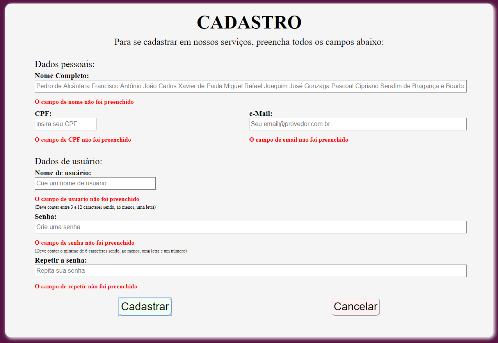
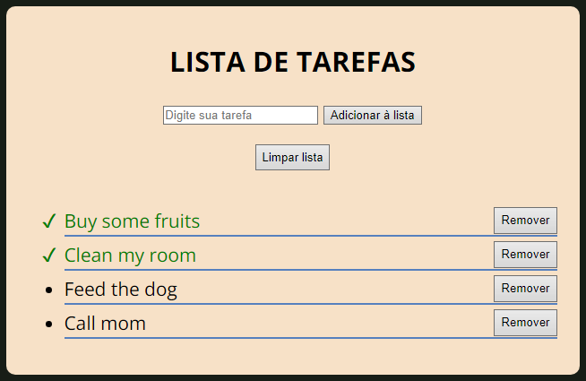
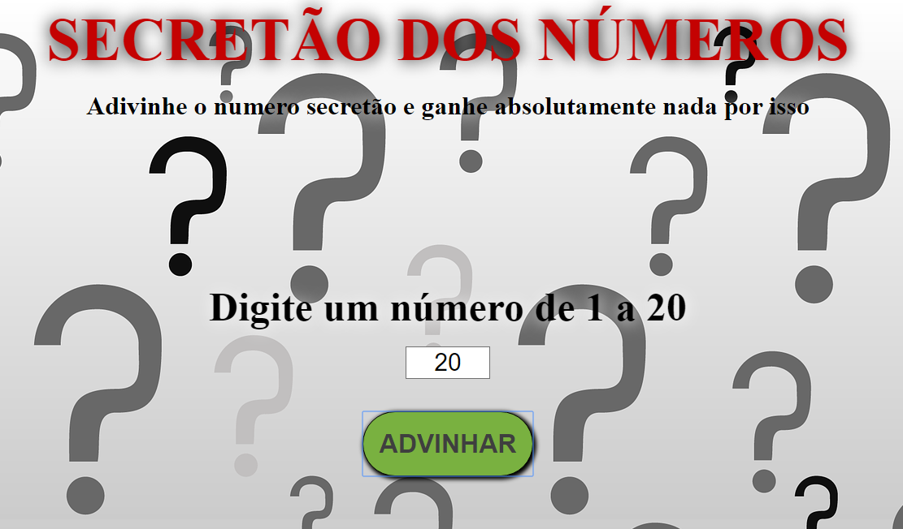
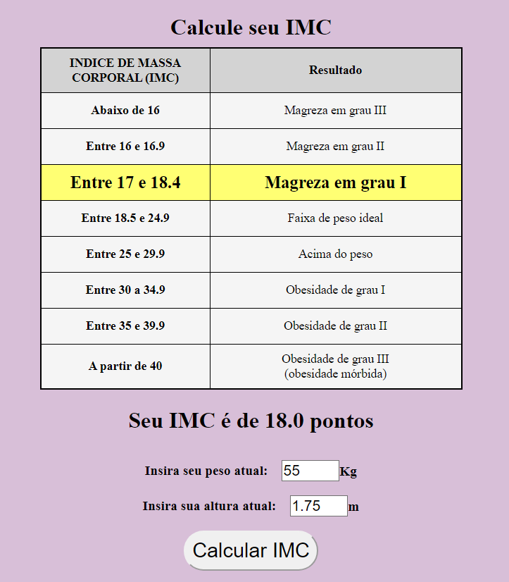

Sobre Mim
Bacharel em Direito pela Universiade Cândido Mendes no Rio de Janeiro,
e com anos de prática da advocacia, estou em transição de carreira para
uma área que me traga satisfação não apenas profissional mas, principalmente, pessoal.
Atualmente estudando desenvolvimento web e garantia de qualidade,
sou apaixonado por testes de software e gestão de bugs,
áreas nas quais atuei como voluntário entre os anos de 2014 e 2020,
e na qual já fui premiado, mais de uma vez,
em agradecimento ao excelente trabalho realizado.
Soft Skills
Durante minha vida pessoal e profissional eu tive a oportunidade de desenvolver diversas habilidades sociais e comportamentais que me serviram, e me servem até hoje, de escada para meu crescimento pessoal e profissional, e para um pleno convívio em sociedade. Abaixo, listo algumas das mais evidentes soft skills que me acompanham em minha trajetória.
Colaboração e trabalho em equipe
Um ponto de virada na minha vida profissional foi perceber que, sozinho, eu não chegaria a lugar algum por mais que eu soubesse todo o beabá jurídico. Atuar em conjunto com um corpo jurídico, debater e traçar estratégias em conjunto sempre foi um grande desafio, mas estar sempre disponível ao debate e à troca conhecimento, além de estar sempre solícito a auxiliar um colega, com dúvida ou dificuldade, passou a ser uma constante em minha vida.
Comunicação apurada
Logo cedo na minha vida profissional percebi que a mensagem tem que ser passada de forma clara e direta e, com isso, sempre tento aprimorar minha forma expressar as coisas de modo assertivoe com a maior clareza possível. De nada adianta uma mensagem que não foi devidamente recebida e compreendida por que deveria, da forma com a qual deveria.
Ética e respeito no ambiente de trabalho
Durante minha trajetória profissional tive que lidar com situações de clientes que narravam histórias das mais escabrosas de assédios fisicos e psicológicos de toda sorte. Conhecer o mundo por essa ótica me permitiu enxergar que a ética no ambiente de trabalho é fundamental para nutrir um ambiente laboral agradável a todos. Tentando sempre me manter atualizado sobre o assunto, adotei como prática pessoal o respeito mútuo e a busca por relações interpessoais sempre saudáveis, evitando ao máximo que o alcance do meus objetivos prejudique algum colega ou crie conflitos ou gere situações desagradáveis.
Aprendizado contínuo
Uma das características mais marcantes que trago comigo e umas das primeiras que aprendi a identificar e reconhecer em mim é não apenas a capacidade de aprendizagem, como o gosto por aprender. A sensação de absorver um novo conhecimento e compreender como uma fração do mundo se relaciona é indescritível mas, incrível mesmo, é saber que uma vez que os olhos enxergaram o mundo por trás de novas lentes, essas lentes ficam para sempre.
Criatividade na resolução de problemas
Norteado pela minha curiosidade contínua, fui capaz de perceber uma certa facilidade em pegar parte desse repertório acumulado e, de diferentes formas, utilizando diferentes combinações, gerar soluções inesperadas para problemas surgidos de forma igualmente inesperada, habilidade que sempre tento desenvolver cada vez mais.
Facilidade de adaptação à situações adversas
O surgimento sempre imprevisível de prazos processuais ou o aparecimento de uma demanda urgente, muitas vezes envolvendo a retirada da liberdade ou risco de morte de um cliente ou de seus familiares, me ensinou que preciso estar apto à frequentes mudanças na rotina de trabalho, bem como lidar com elas de modo que sejam cumpridas dentro dos prazos e necessidades estabelecidas.
Pensamento crítico aguçado
Ao longo da minha vida adulta eu fui percebendo que simplesmente acatar o que manda o senso comum talvez não fosse para mim que, curioso, sempre buscava ver a situação por novas óticas, sob o prisma de outras compreensões técnicas ou pessoais. Hoje, sempre busco novos meios de reavaliar e reestruturar meu pensamento, de modo que cruzar informações, ponderar e analisar todas as opiniões, pesquisar, refletir sobre os casos e verificar brechas onde outros muitas vezes nem se dão conta, para então desconstruí-las e sugerir soluções ao problema, seja natural para mim.
Hard Skills
Almejando minha transição de carreira, venho buscando o máximo de conhecimento no sentido de garantir, da melhor forma possível, a qualidade de um software em desenvolvimento. Para isso, estudo não apenas a área da qualidade em si, com seus planejamentos, automações e execuções de teste, mas também o próprio processo de desenvolvimento e programação, atualmente com foco em web, para conhecer todos os pormenores de como é feita uma aplicação, de seu início a seu fim, e como suas engrenagens rodam por trás das cortinas. Deste meio, é possível listar algumas qualificações técnicas que foram adquiridas durante este processo de transição.
Planejamento de testes e gestão de bugs eficiente
Apaixonado por testagem de software, me dediquei a destrinchar e absorver os conceitos de QA e sua execução prática, com todos planejamentos e execuções de testes, além de me aprofundar ainda mais em gestão de erros e bug report.
Testagem manual minuciosa e automação de qualidade
Mesmo tendo experiência voluntária com testagem exploratória e regressiva de software, eu entendi que isso é insuficiente para galgar uma nova carreira. Assim, ingressei também no mundo de automação de testes.
Capacidade de integrar equipes ágeis e de entrega contínua
Pilares do desenvolvimento contemporâneo de software, fiz questão de entender, em detalhes, o que são as equipes ágeis, seus membros, o papel de cada um e como executar tarefas sob as metodologias SCRUM e KanBan.
Controle e compartilhamento de versões
Mesmo com noções sobre controle e versionamento de software, aprofundei meus conhecimentos sobre o uso de ferramentas como o Git e GitHub para melhor eficiência das atividades em grupo cumprimento de entrega contínua de resultado.
Lógica de programação aplicada
Considerando ser a base mais importante para realizar minha transição de carreira adquiri conhecimentos sólidos de lógica de programação em diversos cursos que vão dos conceitos mais básicos até a aplicabilidade da lógica no dia a dia.
Noções de Phyton
Durante meus estudos também adquiri conhecimentos básicos de programação em Phyton, linguagem mais simples e intuitiva, largamente utilizada no desenvolvimento de softwares.
Aptidão para o desenvolvimento web
Buscando entender o processo de desenvolvimento e a programação de uma aplicação, para melhor garantir a qualidade do produto, dominei o do uso de marcações, estilizações e linguagens voltadas ao desenvolvimento web.
Prezo pelo design responsivo
Querendo sempre mais, me entreguei à prática do desenvolvimento responsivo orientado pelo conceito de mobile first.
Small study projects
Validação de formulário front-end 
Front-end form validation project
Lista de tarefas 
To-do list project made to put in practice some JS and JSON concepts.
Secretão dos números 
Guess-the-number game made to put in practice some HTML, CSS and JS concepts.
Calculadora de IMC 
Body mass index calculator made as small studing project to put in practice some JS and CSS concepts.